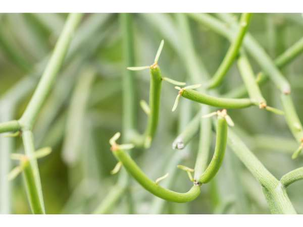

Euphorbia tirucalli
Common Names: Pencil Cactus, Milk Bush, Fire Sticks, Indian Tree Spurge
Local Name: Sehund (Hindi), Kalli (Tamil), Thutha (Telugu)
Family: Euphorbiaceae
Origin: Africa and India
Plant Type: Succulent shrub or small tree
Average Lifespan: Many decades; very long-lived
| Growth Habit | Densely branched succulent shrub with cylindrical pencil-like stems |
| Plant Size | 2–9 meters tall in the wild; 1–3 meters in cultivation |
| Leaves | Tiny, rudimentary, quickly shed; photosynthesis performed by green stems |
| Flowers | Tiny, yellow-green cyathia at stem tips; inconspicuous |
| Root System | Deep, drought-resistant taproot; very hardy once established |
| Climate | Tropical to subtropical; extremely drought-tolerant |
| Temperature Range | 15–40°C; tolerates heat and drought extremely well |
| Soil Type | Well-drained sandy or rocky soil; tolerates poor soils |
| Soil pH Preference | 6.0–8.0; very adaptable |
| Sun Requirement | Full sun; requires bright light for best growth |
| Water Requirement | Very low; one of the most drought-tolerant plants |
| Can it Grow in Pots? | Yes, in well-draining cactus mix; handle with gloves |
| Fertilizer Schedule | Minimal; once or twice a year is sufficient |
| Common Pests | Mealybugs, scale insects; generally very pest-resistant |
| Common Diseases | Root rot in waterlogged soil; otherwise very disease-resistant |
| Pruning Time | Prune to shape; wear gloves and eye protection — milky sap is toxic and irritating |
| How to Prune | Cut with clean tools; wash hands thoroughly after; avoid sap contact with eyes and skin |
| Propagation by Cuttings | Stem cuttings; allow cut end to dry for 1–2 days before planting in dry sand; wear gloves |
| Commercial Production Regions | India, Africa; widely used in arid landscaping worldwide |
| Market Uses | Ornamental garden plant, living fence, drought-tolerant landscape |
| Market Value (Approx.) | ₹100–500 per plant depending on size |
| Symbolism | Used as a living fence in rural India; associated with protection and boundary marking |
| Traditional Uses | Latex used in traditional medicine (with caution); plant used as biofuel source; CAUTION — milky sap is highly toxic and irritating to skin and eyes |
Add your field observations here.